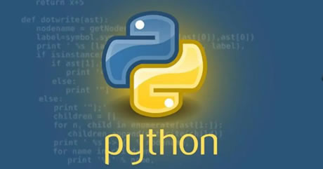
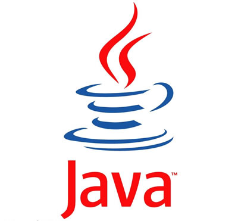
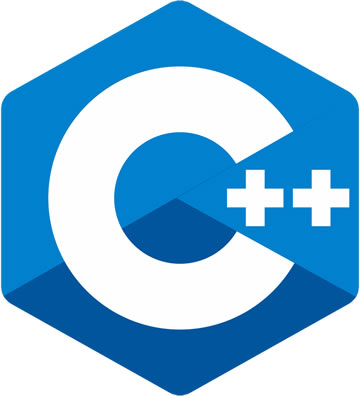

首页 > 编程笔记
机器学习使用哪种编程语言？
机器学习应该选择哪种编程语言呢？其实，选择哪种编程语言关系不大，关键是选取编程语言的机器学习库和工具，很多机器学习库支持多种编程语言。
目前主流的机器学习开发语言有 MATLAB、Python、Java、C++ 和 R。
MATLAB 可以应用于机器学习算法的原型设计，开发复杂的解决方案。
MATLAB 语言的优点是编程简单、效率高、易学易懂，MATLAB 规定了矩阵的算术运算符、关系运算符、逻辑运算符等高效方便的矩阵和数组运算。MATLAB 语言的缺点是循环运算效率低、封装性不好。
图1：MATLAB 语言的 Logo
Python 语言是由荷兰人吉多·范罗苏姆在 ABC 语言的基础上开发的。由于具有简洁性、易读性及可扩展性，Python 语言已经成为最受欢迎的程序设计语言之一。
Python 的底层是用C语言编写的，很多标准库和第三方库也是用C语言编写的，所以运行速度非常快。
Python 是开源软件，可以自由发布该软件的副本，阅读软件的源代码，并能对该软件进行改动和发布。由于 Python 的开源本质，它已经被移植到许多平台上，Python 程序无须修改就可以在这些平台上运行。
Python 是面向对象的高级语言，不需要考虑如何管理程序使用的内存等底层细节，程序是由数据和功能组合而成的对象构建而成的，与其他语言如 C++ 和 Java 相比，Python 以一种非常强大又简单的方式实现了面向对象编程。
Python 是一种解释型语言，可以边编译边执行，这使得 Python 更加易于移植。
Java 语言使用虚拟机机制屏蔽了具体平台的相关信息，因而采用 Java 语言编写的程序只需要生成虚拟机上的目标代码，就可以在多种平台上运行。
Java 语言与 C/C++ 语言类似，但学习起来简单很多，Java 语言不使用指针，加入了垃圾回收机制，解决了管理内存的问题，使得编程更加简单。
Java 语言是多线程的，它支持多个线程同时执行，并提供多线程之间的同步机制。
Java 语言支持网络应用开发，其基本应用编程接口中就有网络应用编程接口，提供如 URL、URLConnection、Socket 等类库。
C++ 语言常用于系统层软件开发、服务器程序开发、科学计算等。
C++ 语言简洁、灵活、使用方便，生成的目标代码质量高，程序执行效率高、可移植性好。
C++ 语言支持面向对象的编程机制，如封装函数、抽象数据类型、继承、多态、函数重载和运算符重载。
R语言被认为是S语言的一个分支，S语言是由 AT＆T 贝尔实验室开发的一种用来进行数据探索、统计分析和作图的解释型语言。R语言和S语言在语法上几乎一样，只是在函数方面有细微差别。
R语言作为一种统计分析软件，可以运行于 UNIX、Windows 和 Mac OS 操作系统上。
R语言是一种开放的统计编程语言，其语法通俗易懂，很容易学习和掌握。
R语言的函数和数据集保存在程序包中，当程序包被载入时，其内容才能被访问，基本的程序包已经被收入标准安装文件，常见的程序包有 base（R语言基础模块）、mle（极大似然估计模块）、ts（时间序列分析模块）、mva（多元统计分析模块）、survival（生存分析模块）等。
图5：R语言的 Logo
目前主流的机器学习开发语言有 MATLAB、Python、Java、C++ 和 R。
1. MATLAB
MATLAB 是美国 MathWorks 公司出品的商业数学软件，主要用于算法开发、数据分析、图像处理与计算机视觉、深度学习、信号处理等领域。MATLAB 可以应用于机器学习算法的原型设计，开发复杂的解决方案。
MATLAB 语言的优点是编程简单、效率高、易学易懂，MATLAB 规定了矩阵的算术运算符、关系运算符、逻辑运算符等高效方便的矩阵和数组运算。MATLAB 语言的缺点是循环运算效率低、封装性不好。
图1：MATLAB 语言的 Logo
2. Python
Python 是一种跨平台的计算机程序设计语言，是一种高层次的结合了解释性、编译性、互动性和面向对象的脚本语言。Python 语言是由荷兰人吉多·范罗苏姆在 ABC 语言的基础上开发的。由于具有简洁性、易读性及可扩展性，Python 语言已经成为最受欢迎的程序设计语言之一。

图2：Python 语言的 Logo
图2：Python 语言的 Logo
Python 的底层是用C语言编写的，很多标准库和第三方库也是用C语言编写的，所以运行速度非常快。
Python 是开源软件，可以自由发布该软件的副本，阅读软件的源代码，并能对该软件进行改动和发布。由于 Python 的开源本质，它已经被移植到许多平台上，Python 程序无须修改就可以在这些平台上运行。
Python 是面向对象的高级语言，不需要考虑如何管理程序使用的内存等底层细节，程序是由数据和功能组合而成的对象构建而成的，与其他语言如 C++ 和 Java 相比，Python 以一种非常强大又简单的方式实现了面向对象编程。
Python 是一种解释型语言，可以边编译边执行，这使得 Python 更加易于移植。
3. Java
Java是一种面向对象的语言，使用 Java 语言进行程序开发，需要采用面向对象的思想设计程序和编写代码。Java 语言使用虚拟机机制屏蔽了具体平台的相关信息，因而采用 Java 语言编写的程序只需要生成虚拟机上的目标代码，就可以在多种平台上运行。

图3：Java 语言的 Logo
图3：Java 语言的 Logo
Java 语言与 C/C++ 语言类似，但学习起来简单很多，Java 语言不使用指针，加入了垃圾回收机制，解决了管理内存的问题，使得编程更加简单。
Java 语言是多线程的，它支持多个线程同时执行，并提供多线程之间的同步机制。
Java 语言支持网络应用开发，其基本应用编程接口中就有网络应用编程接口，提供如 URL、URLConnection、Socket 等类库。
4. C++
1982 年，美国贝尔实验室的 Bjarne Stroustrup 博士在C语言的基础上引入了面向对象的概念，提出了一种新的程序语言 C++。C++ 语言常用于系统层软件开发、服务器程序开发、科学计算等。
C++ 语言简洁、灵活、使用方便，生成的目标代码质量高，程序执行效率高、可移植性好。
C++ 语言支持面向对象的编程机制，如封装函数、抽象数据类型、继承、多态、函数重载和运算符重载。

图4：C++语言的 Logo
图4：C++语言的 Logo
5. R语言
R 是一种应用于统计计算和统计绘图的语言和环境，它是属于 GNU 系统的一个自由、免费、源代码开放的软件。R语言被认为是S语言的一个分支，S语言是由 AT＆T 贝尔实验室开发的一种用来进行数据探索、统计分析和作图的解释型语言。R语言和S语言在语法上几乎一样，只是在函数方面有细微差别。
R语言作为一种统计分析软件，可以运行于 UNIX、Windows 和 Mac OS 操作系统上。
R语言是一种开放的统计编程语言，其语法通俗易懂，很容易学习和掌握。
R语言的函数和数据集保存在程序包中，当程序包被载入时，其内容才能被访问，基本的程序包已经被收入标准安装文件，常见的程序包有 base（R语言基础模块）、mle（极大似然估计模块）、ts（时间序列分析模块）、mva（多元统计分析模块）、survival（生存分析模块）等。
图5：R语言的 Logo
关注公众号「站长严长生」，在手机上阅读所有教程，随时随地都能学习。内含一款搜索神器，免费下载全网书籍和视频。

微信扫码关注公众号